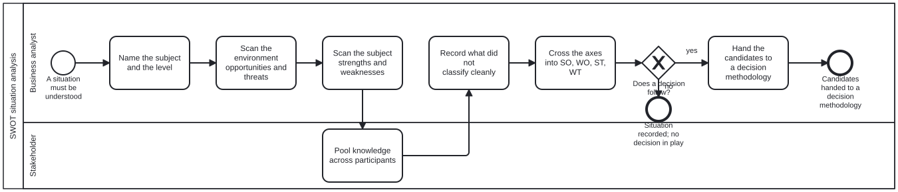

Generated from
cat-harness/skills/process/process-core/swot-analysis.md— do not edit here.
Running a SWOT scan
The method is not in this file. It is the swot node in the methodology
graph, rendered from an ingested source, and this skill is the instruction for
performing it. That split is methodology-adoption’s: a skill names the
methodology it follows, and the method’s own text lives once, so two skills
quoting it cannot drift apart.
Read methodologies/swot.md first — in
particular §”What this platform adopts, and what it refuses”. Ask the
methodology graph for it rather than assuming the path.
The one refusal, before anything else
A SWOT never decides. It produces the raw material a decision is made from.
If you find yourself choosing between options inside a SWOT, you have left the
methodology: stop, and go to options-analysis, which selects a decision
methodology by context.
The diagram enforces this — swot-analysis.bpmn has no path that decides. If a
scan you are running seems to need one, that is a signal you are in the wrong
process, not a gap in this one.
What each step must produce
| step | produces | the trap |
|---|---|---|
| Name the subject and the level | one sentence: what, and at which level (individual, organisational, national) | skipping it — quadrant criteria depend on the level, and a country is not a company |
| Scan the environment | opportunities and threats, worked through the source’s six categories of change | free-associating instead of working the checklist |
| Scan the subject | strengths and weaknesses, worked through the source’s seven business functions | recording a strength as a fact; it is a claim, and where evidence exists, cite it |
| Pool knowledge | the lists reviewed by more than their author | treating this as optional politeness rather than the method’s own bias control |
| Record what did not classify | the factors sitting in two quadrants or none | forcing every factor into one quadrant, which reports a cleanliness the method does not have |
| Cross the axes | SO, WO, ST, WT candidate strategies | stopping at four lists, which is the source’s own central criticism of SWOT |
External is scanned before internal. That is Weihrich’s argument as the source reports it — opportunities and threats are outside the subject and largely beyond its control, and must be managed using its strengths and weaknesses — not a house preference.
Two things you will want to do, and must not
Do not rank or score the factors. SWOT has no priority mechanism; the source is explicit that “quantity does not mean quality”. A scored list asserts a ranking the technique did not produce. When ranking is genuinely needed, use a methodology adopted for ranking — not a weighting invented here.
Do not blend in another method to patch the gap. The source surveys a long
line of quantitative extensions (AHP, ANP, fuzzy variants, SMART, SMAA-O, MADM,
TRIZ). None is adopted. Reaching for one produces the composite
methodology-adoption forbids: a house method that cites nobody while claiming
everybody’s authority.
When SWOT is the wrong tool entirely
Ask methodology-adoption’s selection question. SWOT is situation analysis,
and it is the answer to none of those four questions — it is what you do before
them. If the task is choosing among options, grading evidence, recording a
decision, or computing a recurring branch, you want a different methodology and
a SWOT would be ceremony in front of it.
Related
methodologies/swot.md— the method, its contested origin, and its stated limitationsmethodology-adoption— the selection question, and why methodologies are parallel rather than composableprocesses/process/swot-analysis.bpmn— the executable processprocesses/sdlc/options-analysis.bpmn— where the candidates go next
Processes that run this skill
This skill has its own process: SWOT situation analysis.

| process | step(s) that name it |
|---|---|
| SWOT situation analysis | Name the subject and the level; Scan the environment opportunities and threats; Scan the subject strengths and weaknesses; Pool knowledge across participants; Record what did not classify cleanly; Cross the axes into SO, WO, ST, WT |